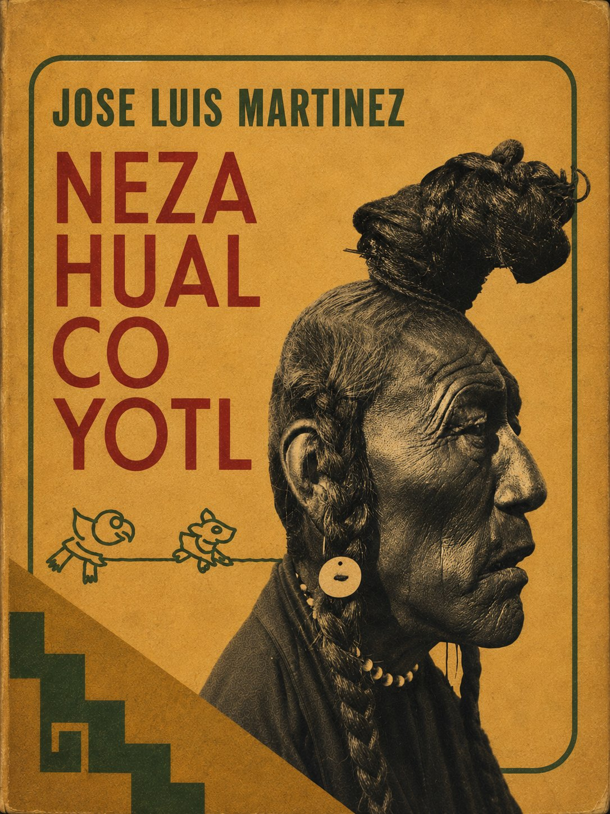

Escucha ahora
SINOPSIS
Biografía intelectual del rey-poeta de Texcoco (1402–1472), construida por José Luis Martínez a partir de testimonios históricos verosímiles. Recorre su infancia marcada por el asesinato de su padre, su exilio, su ascenso como gobernante dentro de la Triple Alianza, sus obras de ingeniería, y la poesía náhuatl por la que es recordado, meditando sobre el tiempo, la muerte y lo divino.
CAPÍTULOS
La infancia y el asesinato de su padre
El exilio y el regreso a Texcoco
El rey de la Triple Alianza
Los jardines y las obras de ingeniería
La poesía náhuatl: el tiempo y lo divino
RESEÑAS

Bueno